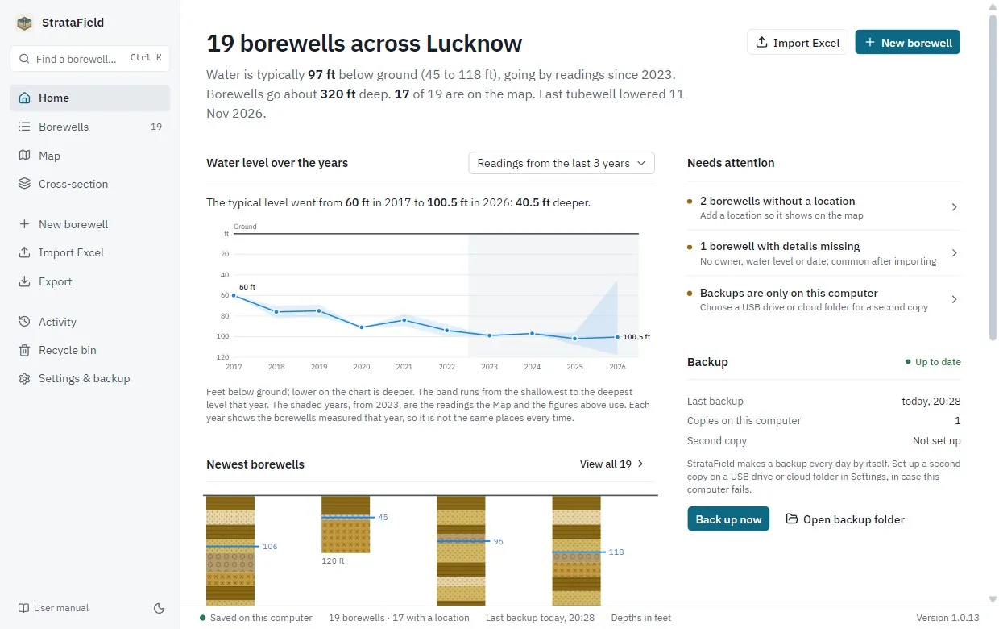

Case study
StrataField
An offline borewell record keeper for my family's drilling business, rebuilt from Electron to Tauri and shipped with signed automatic updates.

The problem
A drilling contractor keeps a record of every borewell: the owner and location, the soil layers found at each depth, the pipe assembly, and water levels over time. In practice those records live on paper and in Excel logs written in whatever layout the person in the field preferred, which makes them hard to search and impossible to compare across a city.
StrataField keeps those records on the office computer, offline, in plain language, and then puts them to work: a map of the city coloured by depth to water, cross-sections of the ground between borewells, and the change in water level over the years. It's used day to day by my family's drilling business. The pilot city is Lucknow.
What it does
- Records with a history. Owner, zone, location, drilling details, soil layers, pipe and screens, water readings, photos and files. Every change is kept in the record's history.
- Excel import that reads real field logs. Layers in fixed steps or drawn to scale, feet or metres, with the site details beside them.
- An offline map coloured by depth to water, using only recent readings, so levels measured years apart aren't mixed.
- Cross-sections along any line drawn on the map. Measured columns and the estimates between them are drawn differently and never confused.
- Reports and safety. A PDF per borewell, Excel export, a backup every day with an optional second copy, a Recycle bin, and restore from any backup.
Decisions
Electron to Tauri 2
The first version was an Electron app with a 134 MB installer, because every Electron app ships its own copy of Chromium and Node. Tauri uses the WebView2 runtime that Windows already has, so the installer is 6.4 MB, with the full user manual bundled inside. I wrote up how the move went.
Native SQLite instead of sql.js
The Electron version used sql.js, SQLite compiled to WebAssembly, which keeps the database in memory and writes it back as one file. The rebuild uses a native SQLite database from Rust, with a schema version and step-by-step migrations. Before an upgrade the old database is backed up; a database from a newer version of the app is refused and left untouched. The older app's data is imported automatically the first time 1.0 starts, and the old file is only ever read.
A thin Rust layer, tested TypeScript
The Rust side only does what needs the computer itself: the database, files and backups. Validation, the Excel reader, the water-depth estimates and the cross-section geometry live in TypeScript in a core package with unit tests, where they're quick to change.
Never make an estimate look measured
A few rules are written into the project plan for anyone changing the code. Layers between borewells are drawn faded and dashed, and clicking one shows which borewells it came from. A gap in the layers is flagged as unknown rather than filled in. Old water readings are never mixed with today's, and the period in use is always stated.
How it ships
- Every pull request runs typecheck, lint, unit tests and a frontend build on Linux, then Rust formatting, lint and tests on Windows.
- An end-to-end test starts the real app on a scratch data folder and works through every screen, from bringing over old data to backups and restore. A performance test runs the same app with 5,000 borewells against time and memory limits per screen.
- Packaging changes also build the installer and run a clean-machine test on a fresh Windows runner: install, start twice, install over the top, uninstall, and check the data survives. A second test updates an installed older build to the newer one.
- Dependencies are checked with
npm auditandcargo auditon every change, and Dependabot proposes updates weekly. - Releases start from a tag. The workflow checks the tag matches the app version, builds, signs and tests the installer, and attaches it with its update signature to a draft release that I publish by hand. Installed copies check for the newest release once a day and only accept updates signed with the project's key.
Version 1.0.0 was released on 30 September 2026, and 1.0.15 eight days later.